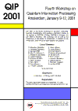

QIP 2001:
Fourth Workshop on Quantum Information Processing
Amsterdam, January 9-12, 2001
Quantum information processing is the intersection of quantum mechanics
and computer science. It tries to improve on classical computers and
classical complexity bounds by making use of quantum mechanical phenomena.
After Peter Shor's 1994 discovery of efficient quantum algorithms for
factoring and the discrete log (threatening current "classical" cryptography),
the field has grown explosively and is now one of the hottest subfields
of both computer science and physics.
QIP 2001 is the fourth workshop on quantum computing,
quantum cryptography, and quantum information theory in the tradition of
AQIP 98 in Århus,
AQIP 99 in Chicago,
and QIP 2000 in Montréal.
It is organized by the Dutch Center for Mathematics and Computer Science
(CWI)
and is held at Het Trippenhuis
in the center of Amsterdam.
The conference will start on the morning of Tuesday the 9th and will
end sometime during the afternoon of Friday the 12th.
It will consist of various invited talks of 45 minutes each,
a display of posters, and an open session.
The slots of the open session will be distributed
during the conference itself.
There will not be published proceedings.
Pictures and News Coverage:
Click here for some pictures. There is an article on
QIP 2001 in Wired, a Dutch
article (part 1 and 2) in the NRC
Handelsblad of January 13, 2001 (front page of supplement
"Wetenschap & Onderwijs"), a Dutch article in the
Automatisering Gids of
January 19, 2001, nr.3, the same article in the Belgian
Financieel-Economische
Tijd, page 15, January 23, 2001, and a German radio report (MP3, Text)
that aired on January 9 on Deutschlandfunk.
Program:
Click here for the
program
or download it as PDF.
Registration:
The early registration deadline was November 15, 2000.
The final registration deadline is December 20, 2000.
You can download the registration form as postscript
or as PDF and fax or send it to the address
indicated at the bottom of the form.
Via this form you can also reserve a room in our
conference hotel.
All such hotel-reservations have to go via CWI;
if you want the conference rates, then please don't send
reservations directly to the hotel.
For the exchange rates between the Dutch guilder and other
currencies, see this
currency converter.
How to get there:
There is a frequent train connection between Amsterdam Schiphol Airport
and Amsterdam Central Station, the train takes about 15 minutes
and also runs at night. Both the
conference venue
(Kloveniersburgwal 29) and the
conference hotel
are at a walking distance of 10 to 15 minutes from Amsterdam Central Station.
The conference hotel Tulip Inn is located on Spuistraat 288-292,
between the Dam Square and the Spui Square.
From Central Station you can walk there in 10 to 15 minutes,
either via Damrak, Dam Square, and Spuistraat, or
via Prins Hendrikkade, Martelaarsgracht, and Spuistraat.
You can also take tram 1, 2, 5, or 11 from Central Station
for 3 stops, get off at Spui Square, and then walk into Spuistraat.
Click here for a
map
of the center of Amsterdam.
List of invited speakers:
- Dorit Aharonov (Berkeley)
- Andris Ambainis (Berkeley)
- Charles Bennett (IBM)
- Gilles Brassard (Montréal)
- Richard Cleve (Calgary)
- Wim van Dam (Berkeley and CWI)
- David DiVincenzo (IBM)
- Edward Farhi (MIT)
- Peter Gács (Boston)
- Gerard 't Hooft (Utrecht)
- Peter Høyer (Århus)
- Richard Jozsa (Bristol)
- Michael Nielsen (Queensland)
- Martin Plenio (Imperial C)
- Alain Tapp (Waterloo)
- Barbara Terhal (IBM)
- Umesh Vazirani (Berkeley)
- Vlatko Vedral (Imperial C)
- John Watrous (Calgary)
- Ronald de Wolf (CWI)
Organization:
Poster:

Download as .ps.gz or as
PDF.
QIP 2002:
QIP
2002 will be held January 14-17, 2002, at the IBM Watson Research
Center, and will be chaired by Charles Bennett and David DiVincenzo.
Last update of this page: June 29, 2001.
Questions? Send e-mail to
qip@cwi.nl.
Webcounter: